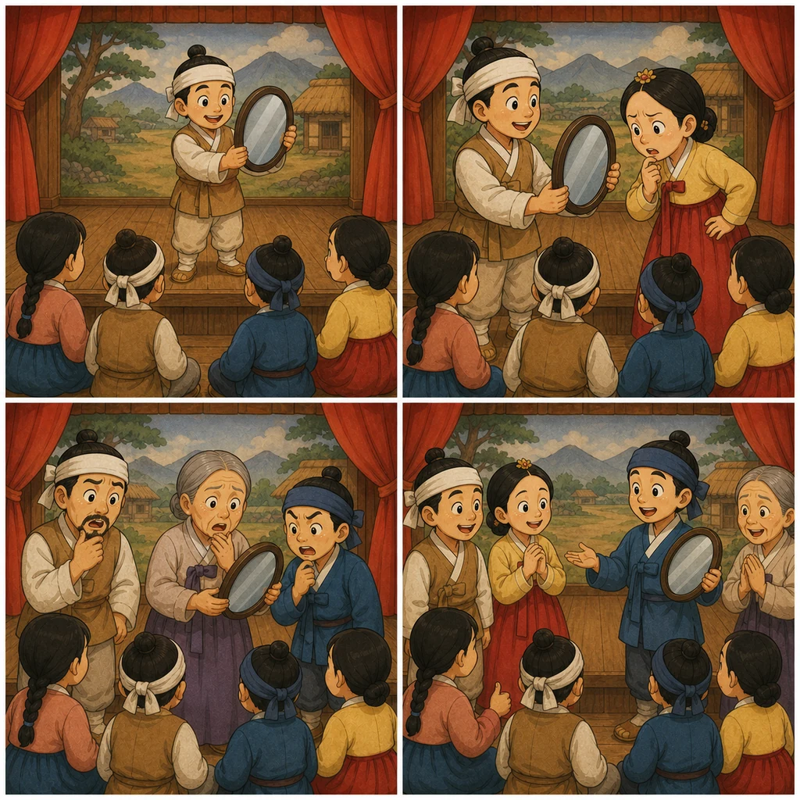

역할 정하기
5명이 한 팀이 되어 역할을 정합니다.
농부 / 아내 / 어머니 / 아버지 / 가게 주인
Speaking
원본 18과 과제는 연극하기입니다. 농부, 아내, 부모, 가게 주인 역할을 나누어 거울 때문에 생긴 오해를 연기합니다.

5명이 한 팀이 되어 역할을 정합니다.
거울을 처음 본 사람들이 각자 다른 사람이라고 오해합니다.
서로 거울을 보려고 하다가 결국 거울이 깨집니다.
Role Play